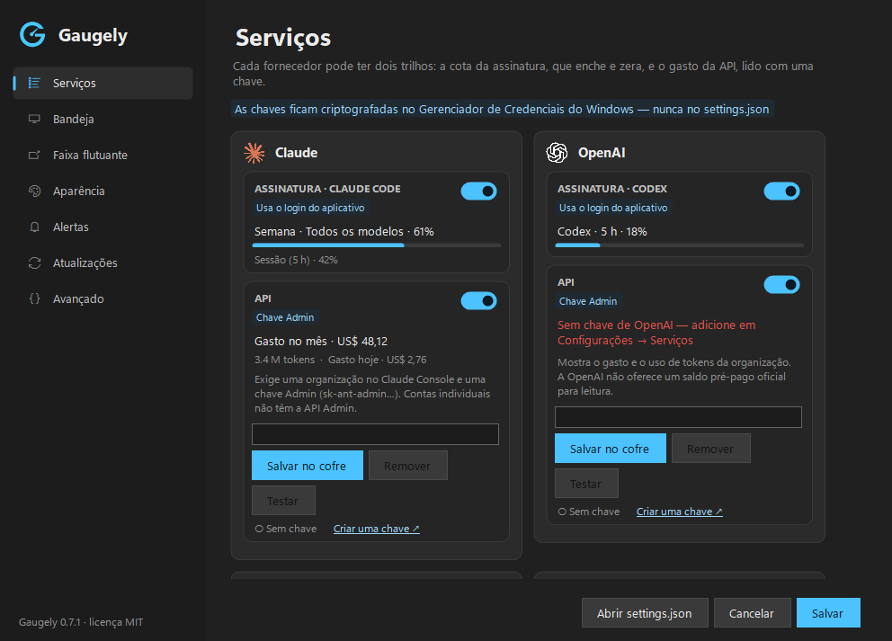
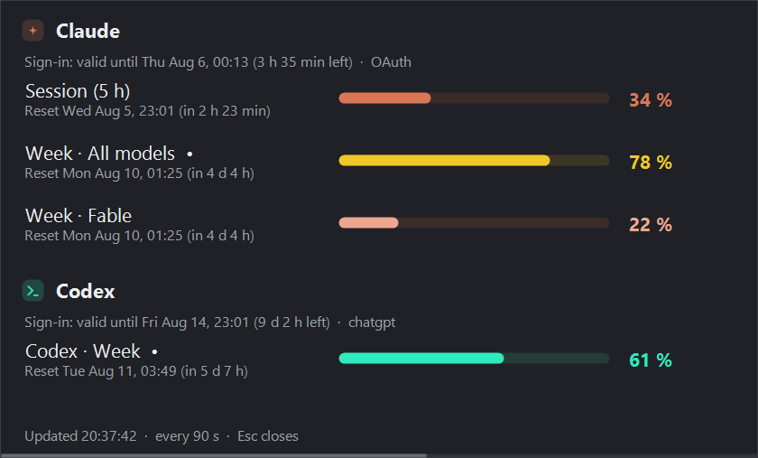
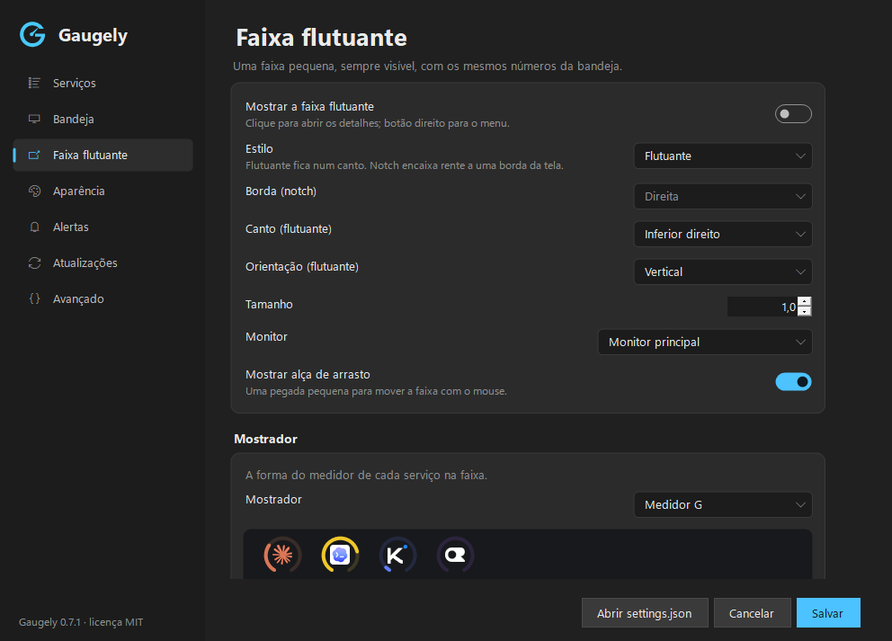

Seus limites de IA, na bandeja do Windows.
O Gaugely mostra quanto resta de cada assinatura de IA e quanto as APIs estão custando, em ícones na bandeja e numa faixa flutuante opcional. Você vê o limite chegando antes que ele te pare no meio de uma tarefa.
Gratuito e de código aberto (MIT) · Windows 10 e 11, x64 · precisa do .NET 9 Desktop Runtime · checksum (SHA256SUMS.txt)

O que ele mostra
| Serviço | Assinatura | API |
|---|---|---|
| Claude | Claude Code: janelas de 5 horas e semanal | API Admin da Anthropic: gasto no mês e no dia |
| OpenAI | Codex | API Admin da OpenAI: gasto no mês e no dia |
| Cotas do AI Pro, lidas pelo CLI do Antigravity | — | |
| Kimi | Kimi Code: janelas de 5 horas e semanal | Saldo da plataforma Kimi |
| OpenRouter | — | Saldo de créditos, gasto no dia, na semana e no mês |
| DeepSeek | — | Saldo |
Como funciona para você
Um ícone por serviço
Cada ícone da bandeja mostra o limite que vai acabar primeiro. Passe o mouse para ver os limites daquele serviço; clique para os detalhes.
Faixa flutuante
Um medidor por serviço, sempre visível, na horizontal ou na vertical — ou encaixado na borda da tela.
Alertas
Uma notificação quando um limite passa do nível que você escolher.
Tudo ajustável
Tema claro e escuro, 11 idiomas e um settings.json simples para quem prefere arquivo.


Privado de fábrica
- Roda só no seu PC. Sem conta, sem telemetria, sem servidor nosso no meio.
- As chaves ficam no Windows. As chaves de API que você cola vão para o Gerenciador de Credenciais do Windows, nunca para um arquivo.
- Só os serviços oficiais. Todos os endereços estão fixos no código, e pedidos que levam chave nunca seguem redirecionamento.
- Atualizar é escolha sua. A verificação vem desligada; quando você instala uma versão, a origem, o checksum e a versão são conferidos antes.
A lista completa do que é lido e enviado, e para onde, está nas notas de segurança (em inglês).
Instalar
Download
- Instale o .NET 9 Desktop Runtime, se ainda não tiver.
- Baixe o
Gaugely.exee oSHA256SUMS.txtda versão mais recente. - Confira o hash — ele tem de ser igual ao da linha do
Gaugely.exenoSHA256SUMS.txt:Get-FileHash Gaugely.exe -Algorithm SHA256 - Coloque numa pasta só dele e abra. Marque Iniciar com o Windows no menu da bandeja se quiser que ele abra sozinho.
Scoop
scoop bucket add gaugely https://github.com/kimmansur/gaugely
scoop install gaugely/gaugelywinget
winget install kimmansur.GaugelyEnviado ao catálogo do winget; o comando funciona assim que o pacote for aprovado. O winget instala sem atalho no menu Iniciar: rode gaugely uma vez e marque Iniciar com o Windows no menu da bandeja.
O Gaugely.exe não tem assinatura digital, então na primeira vez o SmartScreen do Windows pode dizer que protegeu o computador. Confira o hash como acima e escolha Mais informações → Executar assim mesmo.
Créditos
O Gaugely é um fork do RateTray, de nowrap. O motor de leitura, os ícones da bandeja, a janela de detalhes e boa parte do que faz o app funcionar vêm de lá.
Claude, Codex, Kimi, Gemini, Antigravity, OpenRouter, DeepSeek e os outros nomes citados são marcas dos seus donos. O Gaugely é um projeto independente, sem vínculo nem endosso de nenhum deles.